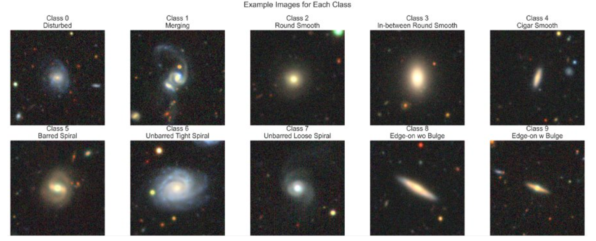
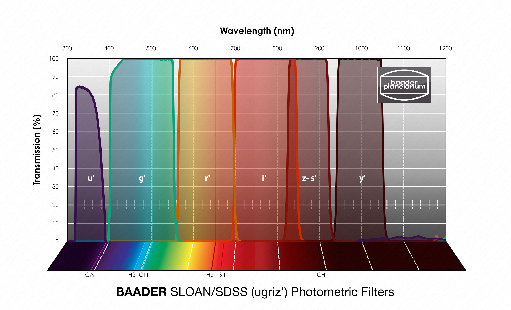

A Machine-Learning Approach to Galaxy Morphology and Parameter Estimation
Yash R. Bhora, Benjamin Ecsedy
Motivation
Dataset
The data was obtained from two different source: galaxy image data was obtained from the the Galaxy DECaLS Dataset, containing 17736 256x256 pixels colored galaxy images (g, r and z band) for 10 morphologies shown below. Additionally, galaxy magnitude simulation data was obtained from from the Rubin Observatory of galaxy magnitude measurements of different color filters in six astronomical bands using the Buzzard V-1.0 simulation.
Example Galaxy Images
Example images from each morphological class, showcasing the diverse appearances of galaxies used for training.
Filter Spectra
Wavelength transmission for each of the u, g, r, i, z, and y filters.
Goals
Primary goal: Evaluate the impact of data augmentation and model complexity on classification and prediction. As such, the main tasks at hand were to:
- Compare performance using “raw” images vs enhanced with data augmentation.
- Assess performance gains among three CNN architectures: SimpleCNN, PowerfulCNN, and EfficientNet_B2 (transfer-learning).
- Determine the predictive power of a simplified statistical model on astronomical data.
References